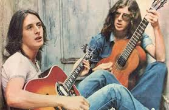
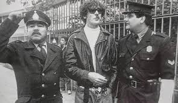
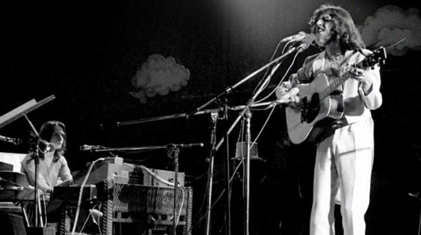
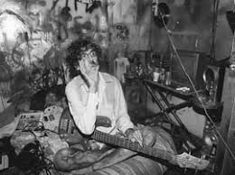

Charly García: La Historia de su Vida
Cómo su música atravesó distintos períodos políticos y sociales de la Argentina
El Nacimiento de una Leyenda
Charly García nació el 23 de octubre de 1951 en Buenos Aires, en un contexto político marcado por la segunda presidencia de Juan Domingo Perón. A lo largo de su vida, Charly vivió momentos clave que se entrelazaron con los hitos de la historia argentina.

Un Inicio Musical Prometedor
Desde pequeño, García mostró una gran inclinación por la música. A los 5 años comenzó a estudiar piano y en 1956 realizó su primera presentación en público. Su amor por la música clásica se vio influenciado por su familia, aunque la aparición de los Beatles en su vida lo llevó a explorar otros géneros.

Sui Géneris: El Nacimiento del Rock Nacional
Durante la década del 70, García formó parte de Sui Géneris, una de las bandas más representativas del rock argentino. La situación política de la Argentina, con la dictadura militar a la vuelta de la esquina, marcó la censura de muchos de sus temas. A pesar de todo, Sui Géneris se consagró con discos como Confesiones de invierno (1972).
La Dictadura y su Música como Resistencia
Durante el proceso militar (1976-1983), Charly García continuó componiendo y presentando música en vivo. A través de sus letras, logró transmitir un mensaje de resistencia y rebelión. Bandas como La Máquina de Hacer Pájaros y Serú Girán surgieron en esos años, enfrentando la censura y marcando una huella profunda en la historia del rock nacional.
La Etapa Solista y el Renacer Musical
En 1982, Charly García comenzó su carrera como solista. Su primer disco, Yendo de la cama al living, se convirtió en un hito histórico en el rock argentino. A lo largo de los años 80 y 90, sus discos Clics Modernos (1983) y Piano Bar (1984) lo consagraron como una de las figuras más grandes del rock en español.
Charly en los 2000: La Larga Batalla Personal
A lo largo de la década de 1990 y 2000, la carrera de Charly se vio opacada por sus problemas de salud y adicciones. Sin embargo, su regreso a los escenarios en 2009 y la publicación de discos como Random (2017) demostraron su capacidad para superar los obstáculos personales y seguir tocando para su público.
"La música es el lenguaje que todos entienden, incluso en tiempos de dictadura." — Charly García